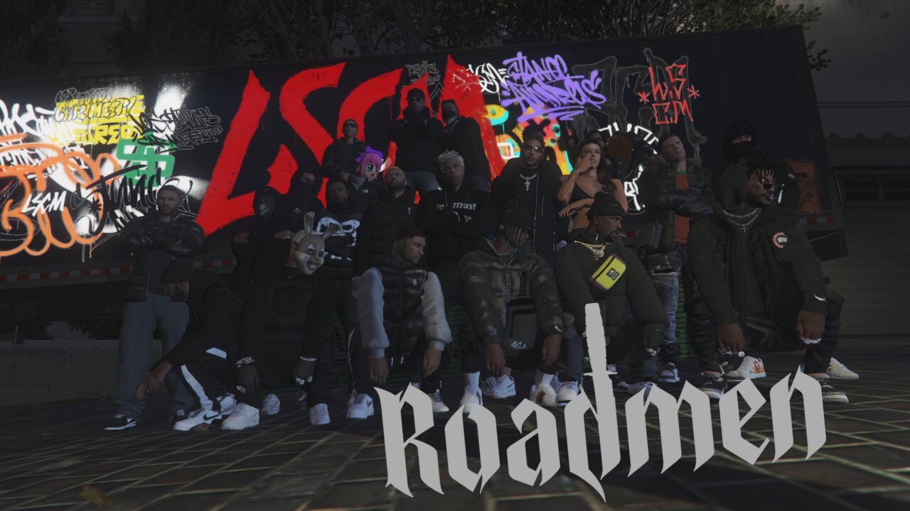
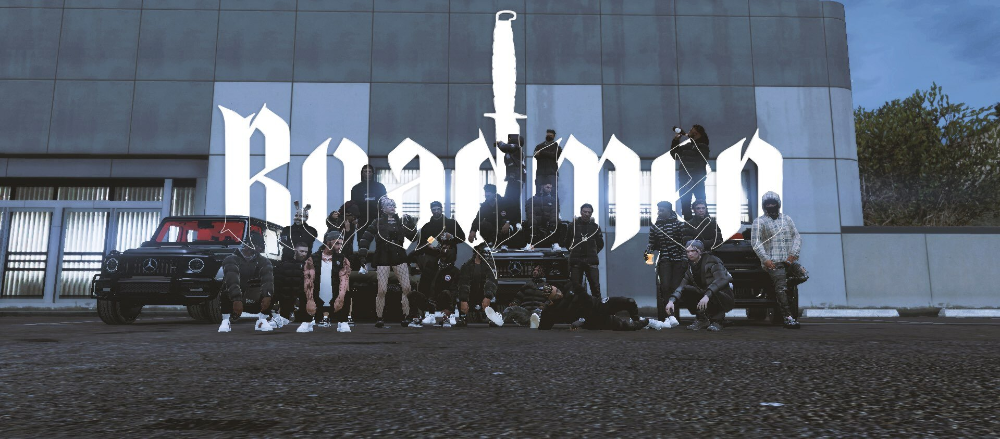
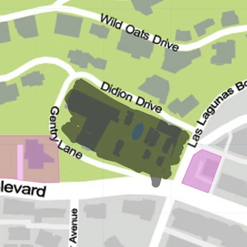
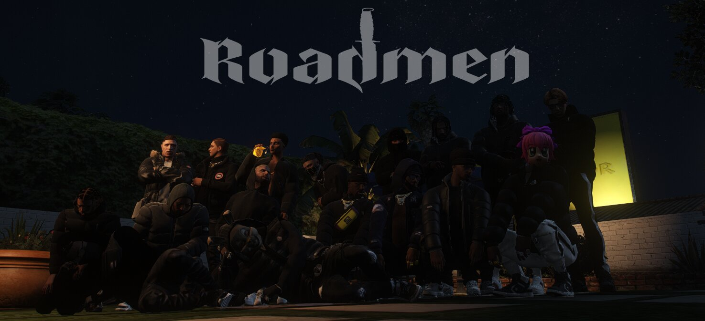
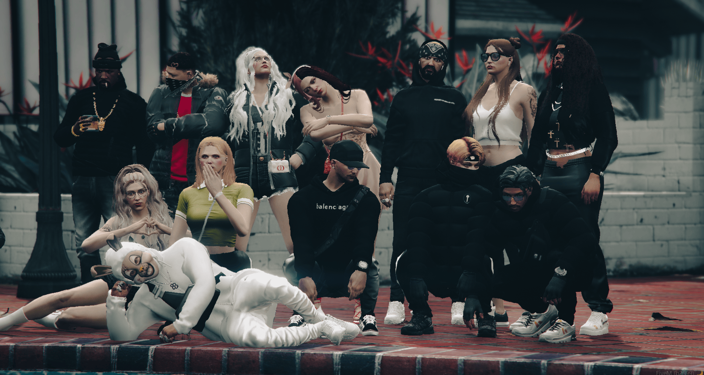
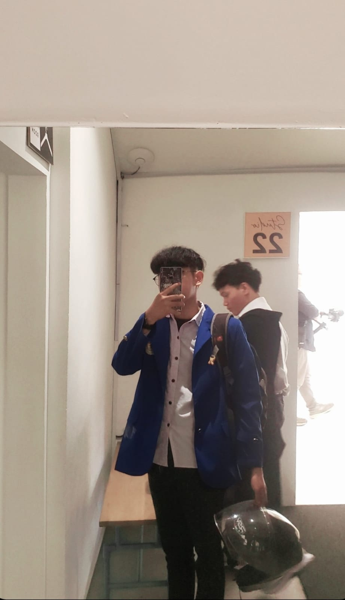
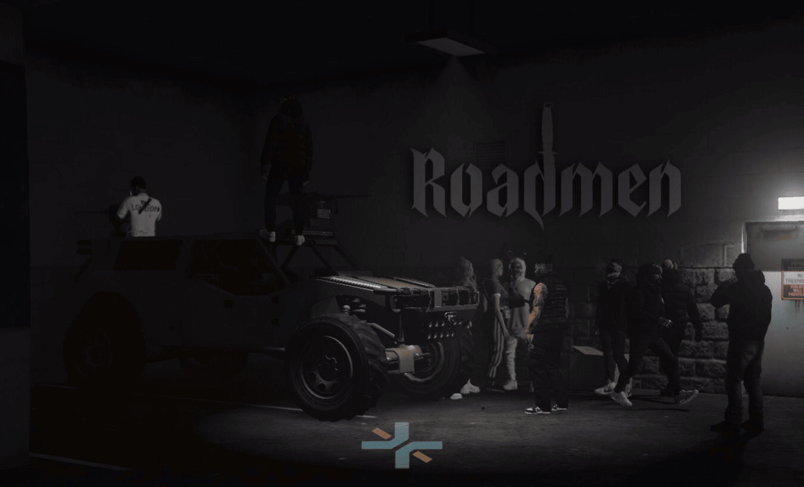
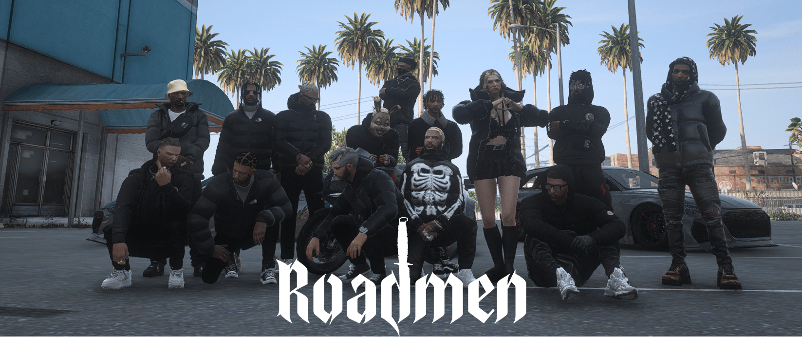
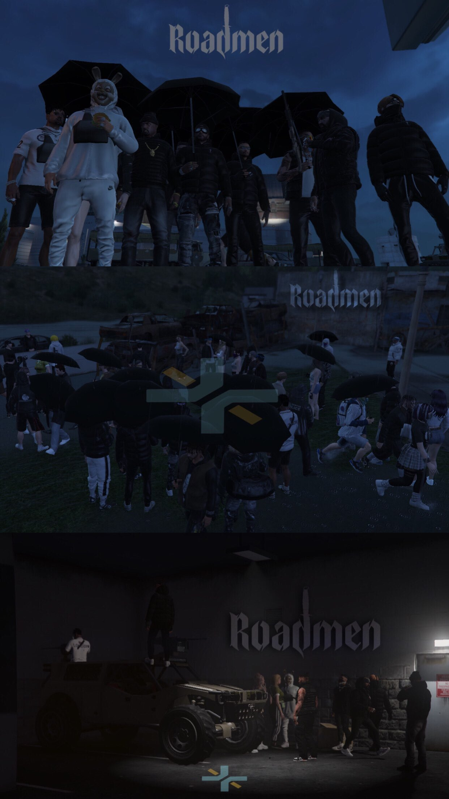

ROADMEN
Roadmen are all very close and see each other as a family. They are willing to go to great lengths for each other. For example, when one member was stabbed by a gang and all his friends helped in the early days of the gang. The gang started from humble beginnings but have since cemented their reputation as a well-known and increasingly respectable gang in Los Santos. Roadmen do not officially have the gang's colors, but often wear their custom puffer jackets and their custom chains featuring the British flag. When they first formed, they often wore puffer jackets, but over time, more and more puffer jackets were worn by residents, and they decided to make necklaces as their identity.
History Of Roadmen
On January 16, 2023, Kent Murphy and his friends landed in Los Santos after traveling far from England. When they landed, they started traveling around the city of Los Santos, they were working, etc. Long story short, Kent met Axel William (Bunny) and Carlo there. just a little chat, carlo and bunny went, at one point bunny called kent and told him to meet at vanilla unicorn, and there carlo gave a job to kent car boosting, and kent did it, and after that bunny and carlo agreed to join roadmen, and roadmen formed. and after that they live life like gangsters. and once upon a time there was an announcement from Shen Long that there would be an gang meet throughout Los Santos, and Shen Long offered business that the gang who was the first to enter the court, would be given the business of assembling weapons and distributing weapons, and in short the Roadmen who got the table and became the first alley in Los Santos that holds weapon crafting
Hood

Trivia
1.The first to achieve Class A in boosting cars (Kent Murphy)2.The first gang to crack LTD's in Los Santos
3.The first gang to assemble and distribute weapons.
4.The first gang broke into a Fleeca Bank, and all eight of its members managed to escaped.
5.The first to break into a Blaine County Bank located in Paleto.
6.The first gang to do Pirates heist.
7.the first gang in Los Santos hit Pacific Bank Heist.
8.Basically the first in everything they did.

Rules
1 Respect.2 Roadmen necklace are half of Roadmen hearts.
3 Snitches get stitches.
4 Kidnapping is not a solution.
Business
TUNER SHOP: The Tuner Shop is a special modification workshop located in the voodoo place, which 3 OG's of Roadmen holds account percentages into as COO, CEO & CFO.
Profile

NAME : Muhamad Dzaky Abdullah
NIM : 10123191
KELAS: IF-5


